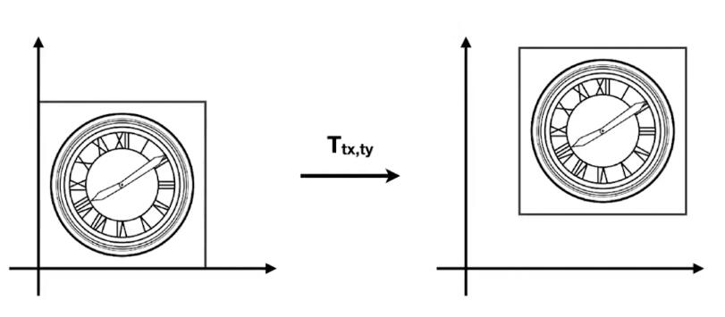
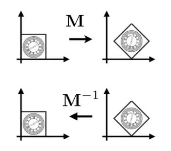
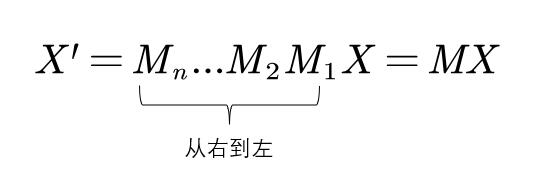

矩阵
矩阵运算性质
[45：00]
- \(AB\ne BA\)
- \(\left( AB \right) C=A\left( BC \right) \)
- \(\left( A+B \right) C=AC+BC\)
- \(\left( AB \right) ^T=B^TA^T\)
- \(AA^{-1}=A^{-1}A=I\)
- \(\left( AB \right) ^{-1}=B^{-1}A^{-1}\)
2D变换(2D Transformation)
[06：52]
缩放变换(Scale)

图中，横轴和纵轴都缩小了\(\frac{1}{2}\)，用数学形式表达：
\[ x'=sx \\ y'=sy \] 其中，\((x',y')\) 是缩放后的坐标，\(s\) 是缩放尺度，\((x,y)\) 是原坐标。
将该式子写成矩阵的形式为：
\[ \left[ \begin{array}{c} x'\\ y'\\ \end{array} \right] =\left[ \begin{matrix} s& 0\\ 0& s\\ \end{matrix} \right] \left[ \begin{array}{c} x\\ y\\ \end{array} \right] \]
即，得到缩放矩阵为：
\[ S_{0.5}=\left[ \begin{matrix} s& 0\\ 0& s\\ \end{matrix} \right] =\left[ \begin{matrix} 0.5& 0\\ 0& 0.5\\ \end{matrix} \right] \]
如果缩放不是均匀的，例如 \(x\) 轴缩小0.5，\(y\) 不变，则用矩阵表示为：

\[ \left[ \begin{array}{c} x'\\ y'\\ \end{array} \right] =\left[ \begin{matrix} s_x& 0\\ 0& s_y\\ \end{matrix} \right] \left[ \begin{array}{c} x\\ y\\ \end{array} \right] \]
即，得到缩放矩阵为：
\[ S_{0.5,1.0}=\left[ \begin{matrix} s_x& 0\\ 0& s_y\\ \end{matrix} \right] =\left[ \begin{matrix} 0.5& 0\\ 0& 1.0\\ \end{matrix} \right] \]
反射(Reflection)
反射也称对称。

上图中，原图相对于 \(y\) 轴做了反转，用等式表示为：
\[ x'=-x\\ y'=y \]
该等式可以用矩阵表示为：
\[ \left[ \begin{array}{c} x'\\ y'\\ \end{array} \right] =\left[ \begin{matrix} -1& 0\\ 0& 1\\ \end{matrix} \right] \left[ \begin{array}{c} x\\ y\\ \end{array} \right] \]
切变(Shear)

上图是切变的例子。可以看到，图像上任意一点的 \(y\) 轴坐标值并未改变，仅 \(x\) 轴坐标改变了。则可以确定的是 \(y'=y\)，继续观察，当 \(y\) 为0时， \(x\) 没有变化，当 \(y\) 为1时， \(x\) 都水平右移了 \(a\) 长度，当 \(y\) 为1/2时， \(x\) 移动了 \(\frac{a}{2}\)，所以，找到了规律， \(x\) 移动距离为 \(ay\)。用矩阵表示为：
\[ \left[ \begin{array}{c} x'\\ y'\\ \end{array} \right] =\left[ \begin{matrix} 1& a\\ 0& 1\\ \end{matrix} \right] \left[ \begin{array}{c} x\\ y\\ \end{array} \right] \]
📌补充： 找到变化规律，就能写出变换的表达式
旋转(Rotate)

✅旋转默认是绕原点(0,0)旋转；默认旋转方向是逆时针旋转。

旋转的矩阵表达式推导：
💡思路： 旋转的图像每一点都需要符合表达式，那么，特殊的点也必须符合，所以从特殊点入手，找出旋转的规律，从而推导出旋转的矩阵形式表达。
假设有一个正方形，如图所示。

将其旋转 \(\theta\) 角度。

我们的目的是得到 \(\left( x,y \right) ->\left( x',y' \right) \)
矩阵的形式为： \(\left[ \begin{array}{c} x'\\ y'\\ \end{array} \right] =\left( \begin{matrix} A& B\\ C& D\\ \end{matrix} \right) \left( \begin{array}{c} x\\ y\\ \end{array} \right) \)
只要找出规律，求出ABCD即可。
我们将目光先聚集在下图中的红点。

最基本的，我们可以知道一些信息，例如，原本的(1,0)点被旋转成为(\(cos\theta，sin\theta\))，

于是，我们就可以初步得到：
\( \left( \begin{array}{c} \cos \theta\\ \sin \theta\\ \end{array} \right) =\left( \begin{matrix} A& B\\ C& D\\ \end{matrix} \right) \left( \begin{array}{c} 1\\ 0\\ \end{array} \right) \)
也就是：
\(\cos \theta =A\cdot 1+B\cdot 0 = A\)
\(\sin \theta =C\cdot 1+D\cdot 0 =C\)
现在，已经得到了A和C。接着，我们选择另一个点。

不难得到，\( B=-sin\theta, D=cos\theta \)
所以有
\( \left( \begin{array}{c} \cos \theta\\ \sin \theta\\ \end{array} \right) =\left( \begin{matrix} cos\theta& -sin\theta\\ sin\theta& cos\theta\\ \end{matrix} \right) \left( \begin{array}{c} 1\\ 0\\ \end{array} \right) \)
上述缩放、反射、切变和旋转，都称为线性变换，可以统一由下面的表达式来表达：
\[ x'=ax+by\\ y'=cx+dy \]
\[ \left[ \begin{array}{c} x'\\ y'\\ \end{array} \right] =\left[ \begin{matrix} a& b\\ c& d\\ \end{matrix} \right] \left[ \begin{array}{c} x\\ y\\ \end{array} \right] \]
\[ X'=MX \]
❗注意： 要用相同维度的向量，去和X相乘。旋转矩阵必须满足\(R^{-1}=R^T\)
齐次坐标
我们先看平移变换：

平移变换非常简单，可以由下面的式子表示：
\[ x'=x+t_x\\ y'=y+t_y \]
但是有一个问题，我们不能把上述式子直接用矩阵的形式表达，需要在矩阵运算后再加一个偏移量：
\[ \left[ \begin{array}{c} x'\\ y'\\ \end{array} \right] =\left[ \begin{matrix} a& b\\ c& d\\ \end{matrix} \right] \left[ \begin{array}{c} x\\ y\\ \end{array} \right] +\left[ \begin{array}{c} t_x\\ t_y\\ \end{array} \right] \]
📌如果只有平移，则 \(a,b,c,d\) 是一个单位矩阵
💡思考： 平移不是线性变换，不满足\(X'=MX\)
为了解决平移变换能够线性表示的问题，将坐标或向量添加一项(以2D为例)：
- 2D point = \((x, y, 1)^T\)
- 2D vector = \((x, y, 0)^T\)
于是，就有了矩阵表达式：
\[ \left( \begin{array}{c} x'\\ y'\\ w'\\ \end{array} \right) =\left( \begin{matrix} 1& 0& t_x\\ 0& 1& t_y\\ 0& 0& 1\\ \end{matrix} \right) \cdot \left( \begin{array}{c} x\\ y\\ 1\\ \end{array} \right) =\left( \begin{array}{c} x+t_x\\ y+t_y\\ 1\\ \end{array} \right) \]
💡 为point增加一项1，因为point移动后不再是原来的point。为vector添加一项0，是因为向量具有平移不变性，向量平移后仍然是原向量。
📌 \((x, y, w)^T\) 如果用于表达2D点，等同于\((\frac{x}{w}, \frac{y}{w}, 1)\)
添加项是否存在，不影响point与vector之间运算的意义：
\[ vector + vector = vector\\ point + vector = point\\ point - point = vector\\ point + point = 两点的中点（齐次坐标下） \]
齐次坐标的性质：
- 有 \((x, y, z, 1)\) 这样一个坐标，那么为该坐标乘以一个不为0的数 \(k\)，即 \((kx, ky, kz, k)\)，结果不变。 同理，给该坐标乘以坐标本身的 \(z\) 值，它仍然表示着3D中的相同点。 例如： \((1, 0, 0, 1)\) 和 \((2, 0, 0, 2)\) 都表示 \((1, 0, 0)\)
仿射变换(Affine transformation)
线性变换 + 平移 = 仿射变换
\[ \left[ \begin{array}{c} X'\\ 1\\ \end{array} \right] =\left[ \begin{matrix} SR& T\\ 0& 1\\ \end{matrix} \right] \left[ \begin{array}{c} X\\ 1\\ \end{array} \right] \]
所有的仿射变换，可以以齐次坐标的形式表达：
仿射变换：
\[ \left[ \begin{array}{c} x'\\ y'\\ \end{array} \right] =\left[ \begin{matrix} a& b\\ c& d\\ \end{matrix} \right] \left[ \begin{array}{c} x\\ y\\ \end{array} \right] +\left[ \begin{array}{c} t_x\\ t_y\\ \end{array} \right] \]
齐次坐标：
\[ \left( \begin{array}{c} x'\\ y'\\ 1\\ \end{array} \right) =\left( \begin{matrix} a& b& t_x\\ c& d& t_y\\ 0& 0& 1\\ \end{matrix} \right) \cdot \left( \begin{array}{c} x\\ y\\ 1\\ \end{array} \right) =\left( \begin{array}{c} x+t_x\\ y+t_y\\ 1\\ \end{array} \right) \]
逆变换(Inverse transform)

💡 当一个变换是通过\(M\)得到的，那么可以通过\(M\)的逆\(M^{-1}\)来恢复变换。
变换合成与分解
- 复杂变换可以通过简单变换一步一步达到
- 变换顺序非常重要，ABC不等于ACB（矩阵乘法性质）
变换合成：

变换分解：

以C点为中心的旋转，可以分解为：
- 从C点平移到原点
- 旋转
- 再从原点平移到C点
即：\(X'=MX=T\left( c \right) \cdot R\left( \alpha \right) \cdot T\left( -c \right) \cdot X\)
再次来看矩阵旋转 \(X'=R_{\theta}X\) :
我们将 \(X\) 旋转 \(\theta\) 度， \(R_{\theta}\) 为：
\[ R_{\theta}=\left( \begin{matrix} \cos \theta& -\sin \theta\\ \sin \theta& \cos \theta\\ \end{matrix} \right) \]
如果要逆转回来，恢复原来的矩阵，需要旋转 \(-\theta\) 度，根据上述旋转的推导，可以得到：
\[ R_{-\theta}=\left( \begin{matrix} \cos \theta& \sin \theta\\ -\sin \theta& \cos \theta\\ \end{matrix} \right) \]
而 \(R_{-\theta}\) 恰好是 \(R_{\theta}\) 的转置矩阵 \(R_{\theta}^{T}\)， 即：
\[ R_{-\theta}=R_{\theta}^{T} \]
由 “当一个变换是通过\(M\)得到的，那么可以通过\(M\)的逆\(M^{-1}\)来恢复变换” 可知，\(R_{\theta}^{-1}\) 与刚刚旋转 \(-\theta\) 推导得到的 \(R_{\theta}\) 相等，即：
\[ R_{\theta}^{-1}=R_{-\theta} \]
于是有：
\[ R_{-\theta}=R_{\theta}^{-1}=R_{\theta}^{T} \]
3D变换(3D Transformation)
如果用齐次坐标来表示三维的点或向量，和二维的情况相似：
- 3D point = \((x, y, z, 1)^{T}\)
- 3D vector = \((x, y, z, 0)^{T}\)
则一个齐次坐标 \((x, y, z, w)^{T}\) \((w\ne 0)\) 表示的点为 \(\left( \frac{x}{w}, \frac{y}{w}, \frac{z}{w} \right)\)
缩放(Scale)
\[ S\left( s_x, s_y, s_z \right) =\left( \begin{matrix} s_x& 0& 0& 0\\ 0& s_y& 0& 0\\ 0& 0& s_z& 0\\ 0& 0& 0& 1\\ \end{matrix} \right) \]
平移(Translation)
\[ T\left( t_x, t_y, t_z \right) =\left( \begin{matrix} 1& 0& 0& t_x\\ 0& 1& 0& t_y\\ 0& 0& 1& t_z\\ 0& 0& 0& 1\\ \end{matrix} \right) \]
旋转(Rotation)
自然旋转
📌自然旋转： 绕着某一个轴旋转。
💡思考： 当绕着x轴旋转时，矩阵在x轴上的坐标值是不变的，因此在变换矩阵中，与X相乘的部分，是 \((1 ,0 , 0)\)，绕y、z轴同理。
绕x轴旋转：
\[ R_x\left( \alpha \right) =\left( \begin{matrix} 1& 0& 0& 0\\ 0& \cos \alpha& -\sin \alpha& 0\\ 0& \sin \alpha& \cos \alpha& 0\\ 0& 0& 0& 1\\ \end{matrix} \right) \]
绕y轴旋转：
\[ R_y\left( \alpha \right) =\left( \begin{matrix} \cos \alpha& 0& \sin \alpha& 0\\ 0& 1& 0& 0\\ -\sin \alpha& 0& \cos \alpha& 0\\ 0& 0& 0& 1\\ \end{matrix} \right) \]
💡思考： 上式的变换矩阵，与x、z不同，是 \(R_{-\theta}\) 而不是 \(R_{\theta}\)，这是为什么呢？
因为绕y旋转，如果使用 \(R_\theta\)，那么可以认为在计算过程中x和z坐标在变化，有 \(\left( \begin{array}{c} X'\\ Z'\\ \end{array} \right) =R_{\theta}\cdot \left( \begin{array}{c} X\\ Z\\ \end{array} \right) =\left( \begin{matrix} \cos \theta& -\sin \theta\\ \sin \theta& \cos \theta\\ \end{matrix} \right) \left( \begin{array}{c} X\\ Z\\ \end{array} \right) \) , 但是， \(\vec{x}\times \vec{z}=-\vec{y}\)，也就是说，使用 \(R_\theta\) 会导致绕y旋转是顺时针旋转，而我们约定了，旋转默认是逆时针旋转，所以需要用 \(R_{-\theta}=\left( \begin{matrix} \cos \theta& \sin \theta\\ -\sin \theta& \cos \theta\\ \end{matrix} \right) \)
绕z轴旋转：
\[ R_z\left( \alpha \right) =\left( \begin{matrix} \cos \alpha& -\sin \alpha& 0& 0\\ \sin \alpha& \cos \alpha& 0& 0\\ 0& 0& 1& 0\\ 0& 0& 0& 1\\ \end{matrix} \right) \]
一般旋转
任意一个3D旋转，可以写成：
\[ R_{xyz}\left( \alpha , \beta , \gamma \right) =R_x\left( \alpha \right) R_y\left( \beta \right) R_z\left( \gamma \right) \]
也就是说，一般旋转可以由绕x、y、z轴的自然旋转组合而成。
在图形学中，任意旋转用矩阵表达为（Rodrigues' Rotation Formula）：
\[ R\left( \mathbf{n},\alpha \right) =\cos \left( \alpha \right) \mathbf{I}+\left( 1-\cos \left( \alpha \right) \right) \mathbf{nn}^{\mathrm{T}}+\sin \left( \mathrm{\alpha} \right) \underset{\mathrm{N}}{\underbrace{\left( \begin{matrix} 0& -n_z& n_y\\ n_z& 0& -n_x\\ -n_y& n_x& 0\\ \end{matrix} \right) }} \]
公式推导：(暂无)
为解决旋转插值问题，参考四元数link。
💡我的思考：
1.复杂问题都可以分解为互相独立的简单问题，但需要保证分解出的子问题是独立的。简单操作也可以组合成复杂操作，但需要保证组合的效果是预期的，而不会引入奇怪的问题。
前面两处使用了这种思路
（1）简单线性变换 复杂仿射变换
（2）基于不同轴的简单旋转 VS 基于特定方向的旋转
但这两个问题的子问题都没有完全独立，因此都存在子问题的顺序要求。
2.当学到一个新的概念/方法时，可以想一想，为什么要引入这个概念/方法？
是为了了解什么问题？
以前是用什么方法来解决的？它有什么问题？
这个方法是否解决了以前方法的问题？这个方法有什么局限性？
两者能否结合？
两者如何取舍？
本文出自CaterpillarStudyGroup，转载请注明出处。
https://caterpillarstudygroup.github.io/GAMES101_mdbook/